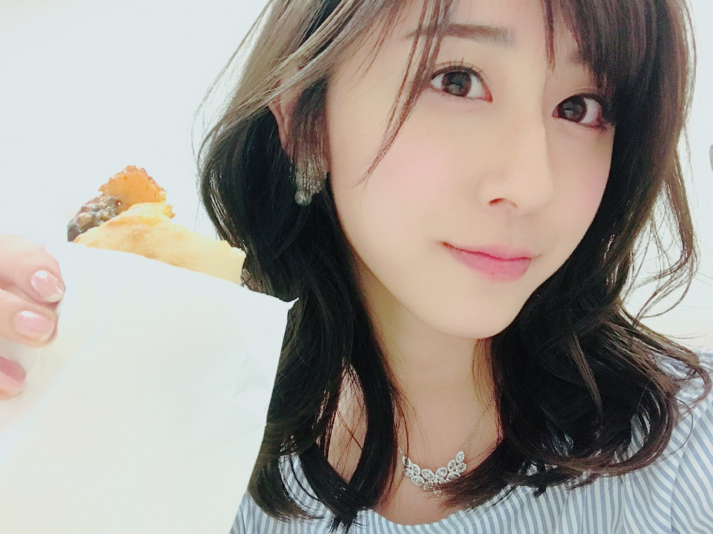
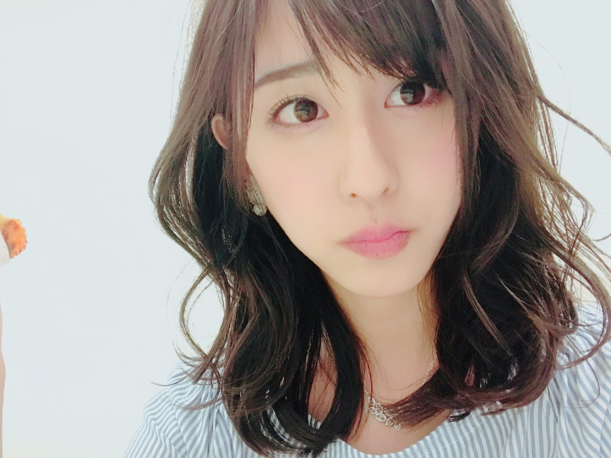

| 2017/04 18 Tue | 座右の銘 |
ちはるーむへようこそ
今日のちはるーむではチョコミントアイスは歯磨き粉の味か否かを討論しました。歯磨き粉の味じゃない派が勝ちました。(ちはるーむ内では)
今日は発明の日。
現在の特許法の元となった
専売特許条例が公布された日です。
私発明家って凄いと思う！！！
誰も考え付いた事のないものやことを
自分だけ発見して創り出すんだもん！
天才だよ〜天才になりたいよ〜
悪用されない世の中になりますように

パンと私。
！ChihAnswer！
 たにさん
たにさん
・ちーちゃんがライブ中にされると嬉しい事ってありますか？
→多分、全メンバー嬉しいのは
曲中にあるコールをされる事かな◎
皆さんの声が一つになって聞こえてくる瞬間が
とても嬉しいの。
曲中では私のことは「ちはる」と呼んでくれたら嬉しいです！
あとは赤と青のサイリウム。
見つけたら「あ〜♡」ってなります！
ぱっかーかめさん
・アンダーライブ成功に向けて、ちーちゃん自身へのご褒美は何かありますか？
→最近お気に入りのイヤリングが
次々と片方だけ紛失してしまって
悲しい気持ちになっているので...
ライブが終わって落ち着いたら
新しいイヤリングを買いに行こうかなと◎
それがご褒美かも！
みっちゅんさん
・大学生活と乃木坂の活動の両立はさぞかし大変だと思いますがそれを頑張れるエネルギー源って何ですか？
→どちらも楽しいし、
いい意味でどちらとも息抜きになってるからかもしれない。
乃木坂が忙しくて辛いときには
学校で知らない事を知れる時間は
辛い事を忘れられる時間だし、
学校のテストが大変なときには
ファンの方にお会いできたり
メンバーのみんなとひたすら話したりする
時間がとっても幸せだし。
あと、ここまできたらもう意地かも！笑
諦めたくないし両立したい！
ひろたかさん
・ちーちゃんの座右の銘って何ですか？
→「最後永遠の眠りにつくときに、良い人生だったなって笑いながら眠れる人生を送ること」
スタッフさんがこう言っていて、
これだ！！とピンときた言葉。
最後の最後で後悔なんてしたくないし
悲しい顔もしたくないし
涙なんて流したくない。
せっかく一度きりの人生なんだから
笑って終われる人生にしたい！
そう思ってから座右の銘はこれです。
今日は短めですが(> <)
またもっと時間に余裕があるときに返したいと思います(> <)
いつもいつもありがとうございます！！
名前覚えてきちゃってる☺︎笑
------------------------------------------------♡
♬ ChihaMusic
「君とつくる未来」ケツメイシさん
この温かさとほっこりする感じと
口ずさみたくなる感じ
今の時期にぴったりな気がする。
昔からずっと好きな曲。
素敵な歌詞だし素敵な声だし。
"ここで今 出会えた意味を
探し拾い集めよう君と"
これからもずっと一緒に宜しくねって
遠回しに伝えているようで
胸がきゅーとなってくる！
可愛い。

さりげなくパン。
もうすぐアンダーライブですが、
一つお願いがあります！！
""「風船は生きている」のサイリウムは、白に統一でお願いしたいです！""
真っ白になった会場全体を見たいっ
皆さんお友達にも教えてあげてください◎
アンダーライブまであと2日。
おやすみ
斎藤ちはる
コメント(284)
2017/04/18 23:40